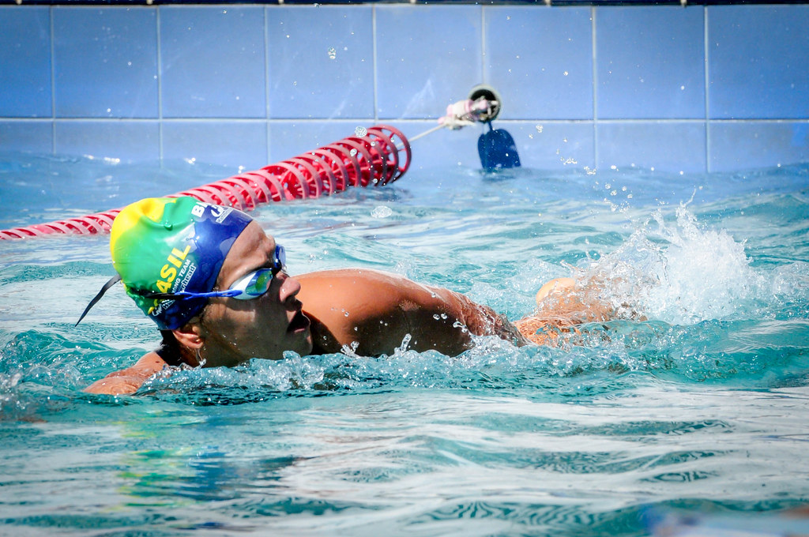

O Pantanal é uma das maiores extensões úmidas contínuas do planeta e está localizado no centro da América do Sul, na bacia hidrográfica do Alto Paraguai. Sua área é de 138.183 km², com 65% de seu território no estado de Mato Grosso do Sul e 35% no Mato Grosso.
Para saber mais informações sobre o nosso querido bioma, o Pantanal, clique nos tópicos na barra de navegação que você será redirecionado para um lugar recheado de novas informações de assuntos como cultura e as mais novas notícias. Agradecemos pela atenção até aqui!